라이브 모바일 점프 게임회사 업무
CatJump
약 2~3주 간격으로 업데이트되는 CatJump에서 PvP·이벤트·보상을 개발하고 출시 후 오류를 수정합니다.

- 기간
- 2025.07~재직 중
- 회사
- 씨플레이 개발팀 · 사원
- 서비스
- 약 70만 MAU 라이브 모바일 게임 · Google Play 500만+ 다운로드
- 내 역할
- Unity·C# 클라이언트 개발 · 라이브 운영 대응
- 기술
- Unity · C# · UGUI · Photon PUN2 · Firebase
맡은 범위
- 본인 설계·구현
- 10인 실시간 PvP 전 범위, 공용 대사 시스템
- 담당 구현
- 보상 상자의 지급·표시 분리, 스킨 상태 연결, 회전 판정 미니게임
- 운영 대응
- 이벤트 10종 이상 개발·수정, 레벨 에디터 업데이트
- 수정 대응
- UI 변경, 튜토리얼·연출 스크립트, 출시 후 오류

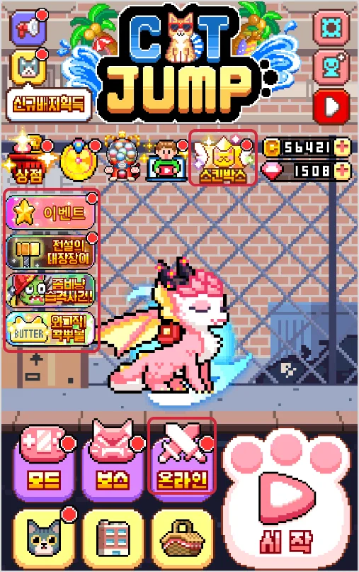

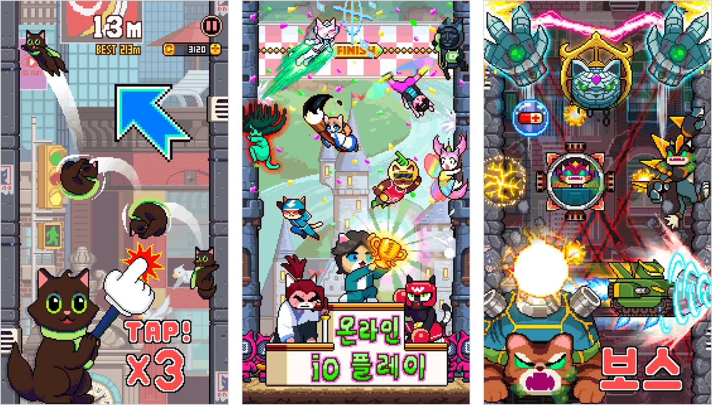

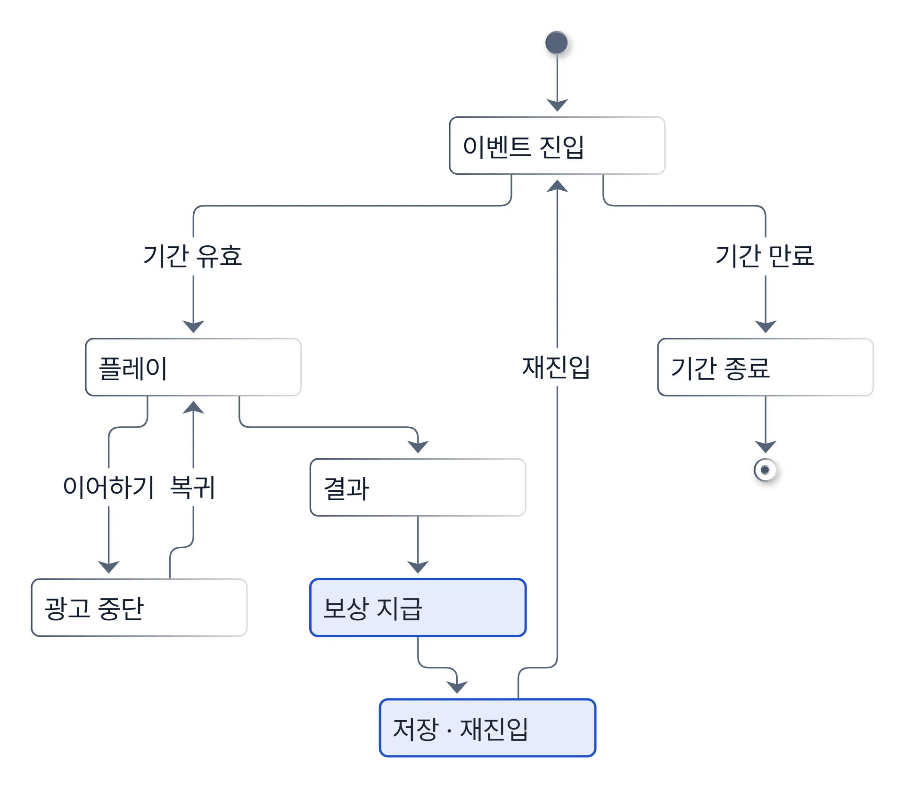

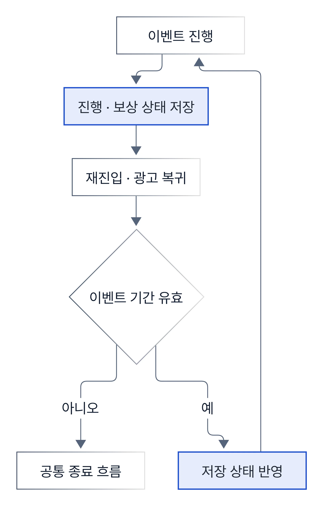
사례 1본인 전 범위 구현
10인 PvP의 호스트 변경 복구와 순번 카운트다운
- 문제
- 전용 서버 없는 PUN2 구조에서 진행 권한을 가진 마스터 클라이언트가 나가면 준비·카운트다운·결과 처리가 멈추거나 어긋날 수 있었습니다. 모바일 네트워크라 이벤트 도착 시점도 클라이언트마다 다릅니다.
- 판단
- 진행 단계를 룸 속성에 기록해, 호스트가 바뀐 뒤 읽을 복구 기준을 남겼습니다.
- 구현
- 경기를 매칭 탐색 → 인원 확정 → 준비·카운트다운 → 플레이 → 결과 단계로 나누고, 예외 상황마다 처리 기준을 정했습니다.
- 결과
- 출시 후 카운트다운 불일치, 룸 진입 크래시, 로비 복귀 오류를 수정했습니다.
| 진행 단계 보관 위치 | 얻는 것 | 비용 |
|---|---|---|
| 클라이언트 메모리에만 | 구현이 단순함 | 새 마스터가 이전 단계의 기준을 읽을 수 없음 |
| 룸 속성에 기록 (선택) | 새 마스터가 같은 값을 읽어 재개 | 갱신 지연·동시 갱신 충돌을 다뤄야 함 |
| 예외 상황 | 처리 |
|---|---|
| 마스터 클라이언트 이탈 | 새 마스터가 룸 속성의 진행 단계를 읽어 이어서 진행 |
| 카운트다운 이벤트 지연 도착 | 이벤트에 붙인 순번을 비교해 지난 순번은 반영하지 않음 |
| 참가자 이탈 | 빈 자리를 AI로 대체 |

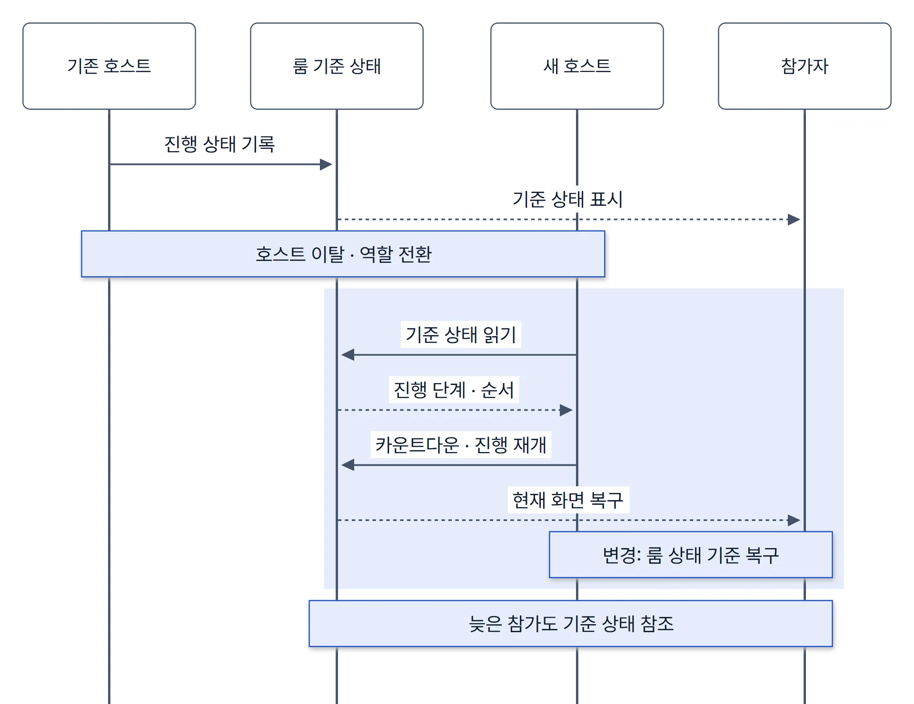
사례 2본인 설계·구현
이벤트마다 하드코딩하던 대사를 공용 시스템으로
- 문제
- 공용 시스템 이전에는 이벤트마다 대사와 연출을 코드에 직접 써서, 새 이벤트마다 대사 UI 연결과 종료·예외 처리를 다시 작성했습니다.
- 제약
- 로컬라이징, 타이핑 중 리치 텍스트 태그, 뒤로가기 닫기를 함께 다뤄야 했고, 이미 하드코딩된 기존 이벤트와도 공존해야 했습니다.
- 판단
- 대사·연출을 이벤트 코드 밖으로 빼고 공용 시스템이 처리하게 했습니다.
- 구현
- 공용 시스템이 태그를 깨지 않는 타이핑, 슬롯 포커스, 배경만 있는 줄, 뒤로가기 닫기를 처리하고, 이벤트 쪽은 완료 콜백으로 후속 동작을 연결합니다.
- 결과
- 이후 다른 개발자가 만든 이벤트에서도 이 공용 대사 시스템을 썼습니다.

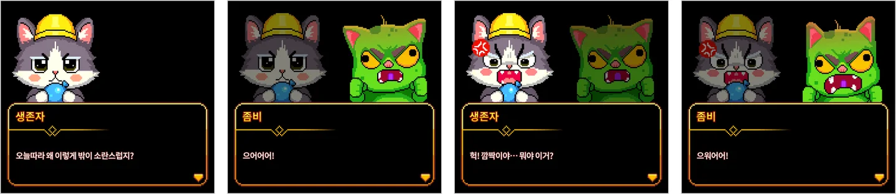
| 항목 | 이벤트별 하드코딩 (기존) | 공용 대사 시스템 (변경) |
|---|---|---|
| 대사·연출 정의 | 이벤트 코드 안 | 이벤트 코드 밖 데이터 |
| 종료 후 다음 동작 | 이벤트마다 직접 연결 | 완료 콜백으로 연결 |
| 장단점 | 이벤트 하나만 보면 빠르고 연출이 자유로움 | 첫 구현 비용, 공용 규칙 밖 연출의 처리 |

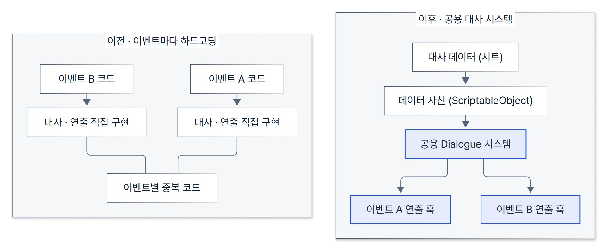
사례 3담당 구현
보상 지급·저장과 표시를 나누고 추첨 전에 후보 제외
- 문제
- 미션 포인트 단계 상자, 광고 추가 개봉, 스킨·재화 가중치 추첨이 한 흐름에 섞이면 팝업·연출만 바꿔도 지급·저장 경로가 같이 바뀝니다.
- 원인
- 확률표에 이미 다 가진 등급이나 상자 대상이 아닌 스킨이 남으면 빈 보상·중복 보상이 됩니다. 확률·보상 표 데이터는 라이브 중에도 바뀝니다.
- 판단
- 진행, 보상 결정, 표시를 다른 책임으로 나누고 표시 계층은 확정된 결과만 받게 했습니다.
- 구현
- 추첨 전에 상자 대상이 아닌 스킨과 보유 스킨을 후보에서 빼고, 유효 후보에서 보상을 정한 뒤 지급·저장 결과를 팝업·개봉 연출에 넘깁니다. 그래도 중복이 나오는 경우를 위해 재화 전환 분기를 따로 두었습니다.
- 결과
- 팝업·개봉 연출은 확정된 결과만 받으므로 표시 쪽을 바꿔도 지급·저장 경로는 그대로입니다. 상자 대상이 아니거나 이미 가진 스킨은 추첨 후보에 들어가지 않습니다.

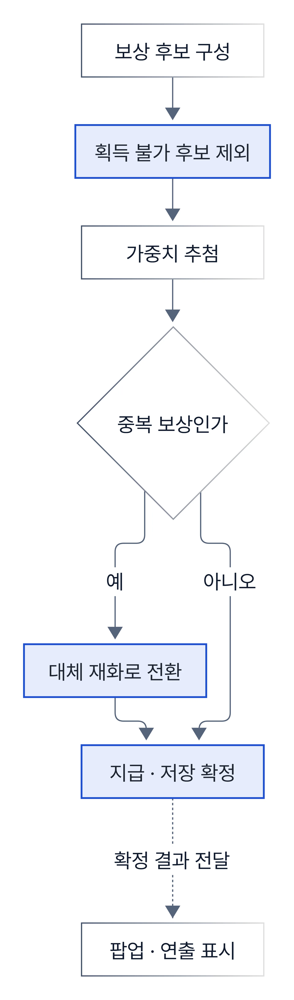
| 후보 처리 방식 | 장점 | 한계 |
|---|---|---|
| 추첨 뒤 무효면 재추첨 | 표를 그대로 사용 | 유효 후보가 0개면 반복이 끝나지 않을 수 있음 |
| 추첨 전 후보 제외 (선택) | 재추첨 반복을 피하고 유효 후보를 명시 | 표의 확률이 유효 후보 안의 확률로 바뀜 |

사례 4담당 구현
회전 UI에서 핀끼리의 충돌을 월드 OBB로 판정
- 문제
- 회전하는 목표물에 핀을 던져 꽂는 기간 한정 미니게임에서, 맞은 것처럼 보이는데 실패로 처리되는 경우가 생겼습니다.
- 원인
- 오브젝트가 UGUI 계층에 있어 부모의 회전·스케일이 누적됩니다. UI 사각형 기준 판정은 회전한 목표물의 보이는 모양과 판정 영역이 달랐습니다.
- 판단
- 핀끼리의 충돌은 월드 위치·방향 기준으로 계산하기로 했습니다.
- 구현
- 날아가는 핀과 이미 꽂힌 핀의 충돌은 월드 위치·방향으로 만든 OBB끼리 비교했습니다. 목표물 부착은 별도의 원 경계 교차로 처리했습니다. 주변 구조는 운영 데이터 파싱·검증, 런타임 모델, 라운드 상태 전환, 판정기로 나눴고, 목표물·등급·회전은 세션 시드와 단계·라운드 값으로 고릅니다.
- 결과
- 핀 충돌 판정을 월드 OBB로 바꾸고, 이어하기 광고·스킵·네트워크 예외를 수정했습니다.

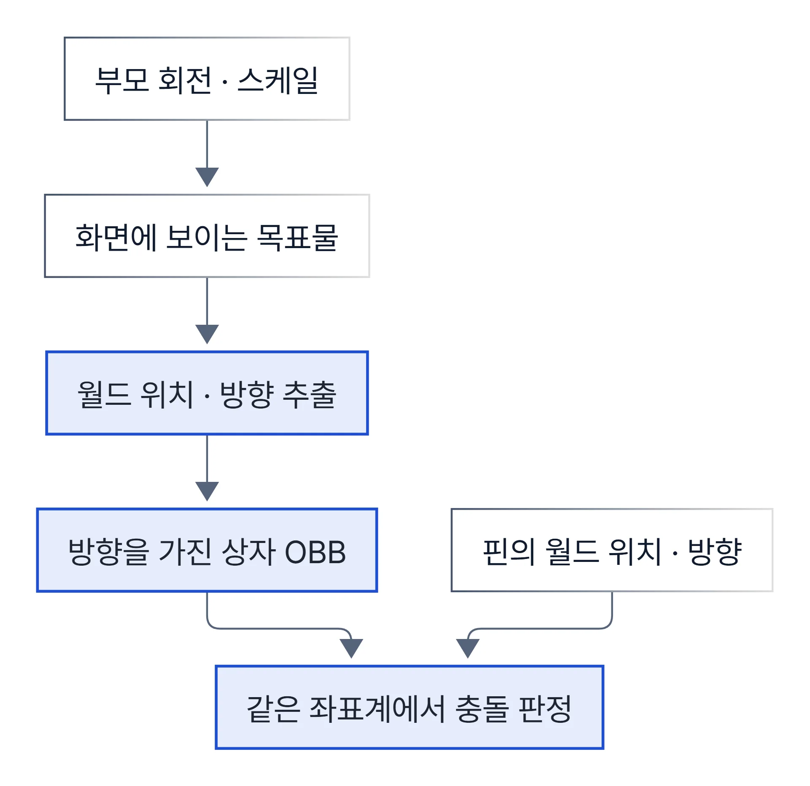
| 판정 방식 | 한계 |
|---|---|
| UI 사각형(축 정렬) | 회전하면 보이는 모양과 판정 영역이 어긋남 |
| 물리 콜라이더 | 캔버스 스케일·카메라 설정과 UI 연출을 함께 맞춰야 함 |
| 원 근사 | 길쭉한 핀 모양에 맞지 않음 |
| 월드 위치·방향 OBB (선택) | 좌표 변환 계산을 직접 관리해야 함 |
함께 맡은 일: 상승형 미니게임의 진행 규칙과 Unity 표현 분리
높이 구간마다 배경·보상·대화가 바뀌고, 광고 이어하기·부스터·일시정지가 끼어드는 미니게임입니다. 시작·완료·지급·결과 적용은 Unity 의존이 적은 흐름 객체에 두고, 입력·시간·스크롤·연출은 연결 계층으로 나눴습니다. 배경은 진행도 구간과 유저 시드로 결정적으로 고릅니다. 데이터 버전이나 난수 소비 순서가 바뀌면 결과가 달라질 수 있습니다.

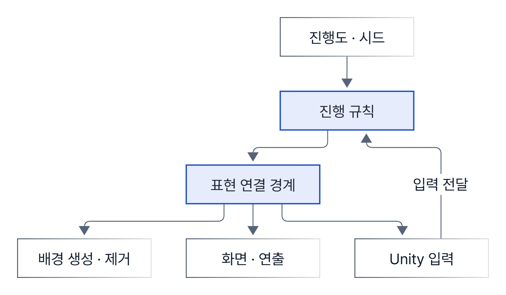
사례 5라이브 대응
광고 복귀 경로에서 빠지던 보상 저장 수정
- 문제
- 메인 화면 광고 보상(티켓)이 저장되지 않는 경로가 있었고, 이어하기 광고에서도 스킵·네트워크 실패·일시정지 후 종료 예외가 반복됐습니다. 광고 SDK 콜백은 앱의 백그라운드 전환과 엮여 있습니다.
- 구현
- 광고 결과 콜백 → 보상 지급 → 저장 → UI·알림 갱신 순서로 경로를 맞추고, 이어하기 광고의 스킵·실패 예외를 처리했습니다.
- 결과
- 광고 보상 경로에서 누락된 저장 처리를 수정했습니다.

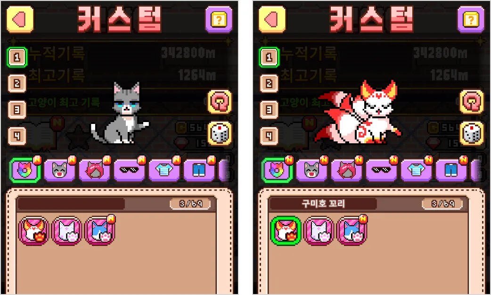
라이브 운영에서 맡은 그 밖의 일

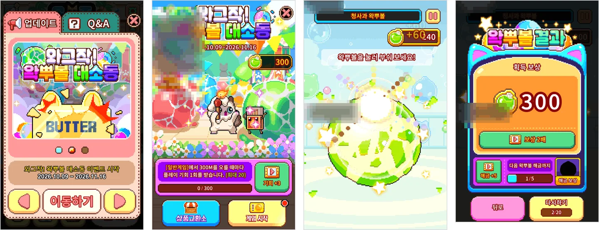
- 이벤트
- 이벤트 10종 이상 개발·수정, 신규 미니게임을 공통 이벤트 생명주기에 연결
- 도구·데이터
- 레벨 에디터 업데이트, 스킨 리소스 폴더 단위 등록 에디터 도구, 현지화 리소스 반영
- 화면·연출
- UI 변경 대응, 튜토리얼·연출 스크립트 수정, 캐릭터 획득 시 프로필 배지 지급 연동
- 정리·안정화
- 종료 이벤트 자산 정리, 테스트 기능의 에디터 전용 제한, Crashlytics 리포트 기반 크래시 조사
함께 맡은 일: 기존 색상 선택을 보존하며 스킨 상태 연결
서비스 중인 색상 변경 기능 위에 스킨을 추가했습니다. 스킨 정의는 런타임에 한 번 인덱싱하고, 각 화면은 이 기준으로 상태를 다시 계산합니다.
| 수정 기록 | 처리 |
|---|---|
| 기본 스킨 선택 시 색상 선택 해제 | 기존 색상 상태 보존 |
| 일부 결과 화면에 스킨 초상화 누락 | PvP·레이스 결과 화면에 연결 |
| 탭 이동 후 설정 창 유지 | 탭 이동 시 닫힘 처리 |